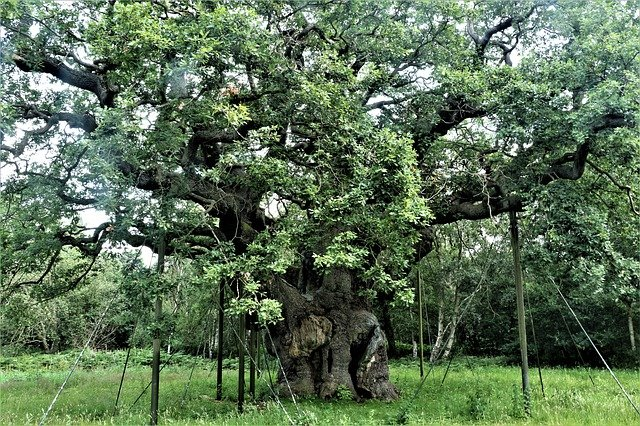
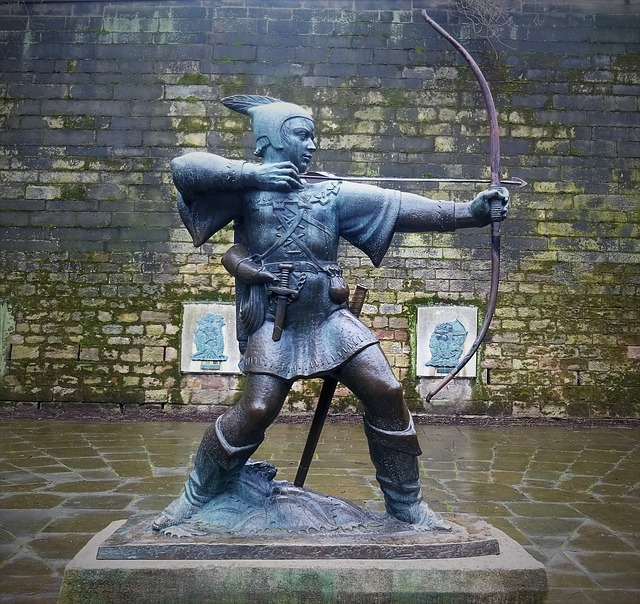

Thoresby Vale is a brand new development situated in Edwinstowe. Thoresby Vale is set to home the following -
Robin Hood is an iconic figure to the Nottinghamshire area. He was known to be a crafty archer and sword fighter. Robin Hood is believed to of taken residence in the 'Major Oak'. It is believed Robin Hood was in a regular battle over his lands and would steal from the rich to provide for the poor.
Robin Hoods Residence
Always found with a Bow and Arrow in hand!
